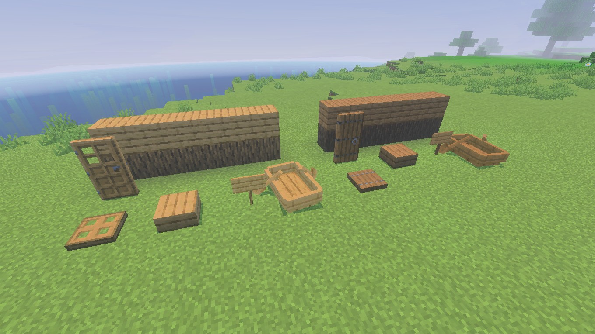
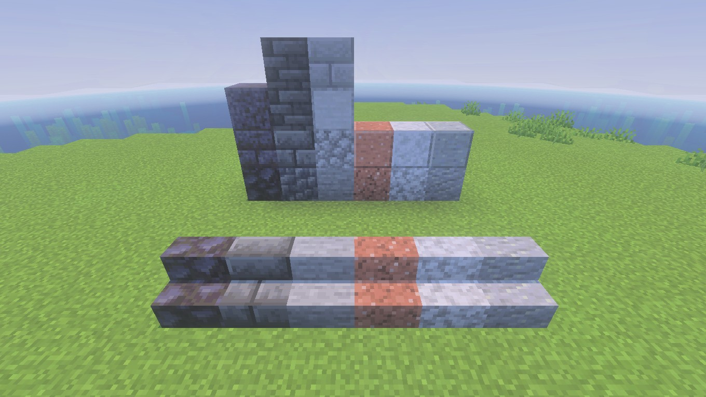
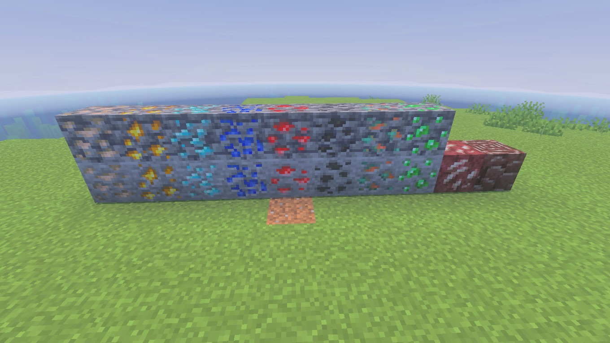
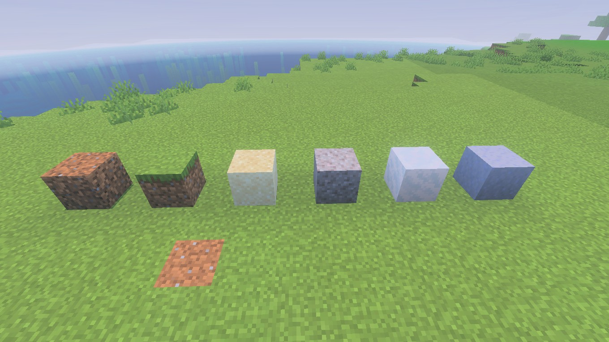
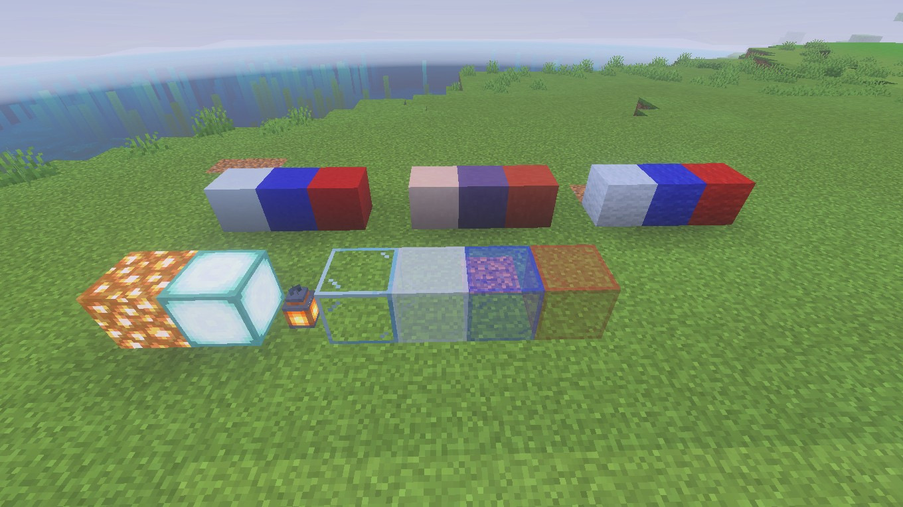
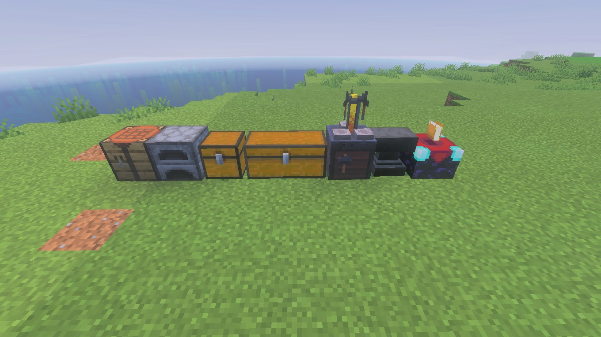
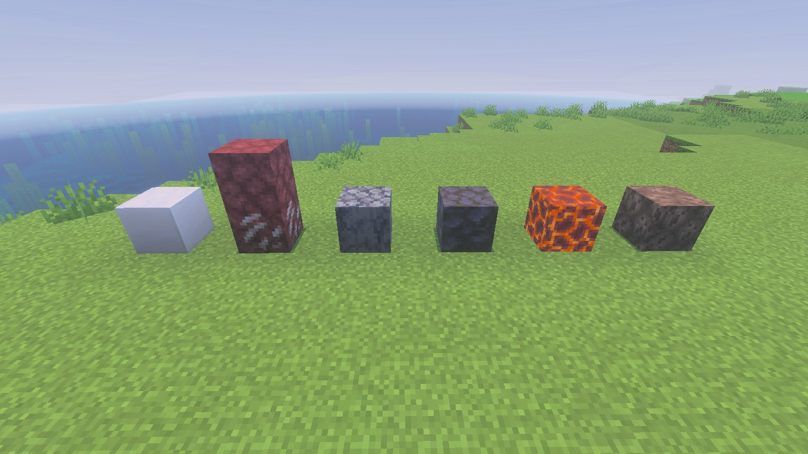

Blocos
Essa página apresentará as principais categorias de blocos presentes no mundo de Minecraft.
Os blocos são a unidade fundamental do jogo. Tudo ao seu redor é feito deles, desde a terra que você pisa até os materiais mais complexos que você usa para construir.
Madeira
Blocos de Madeira: A Base de Tudo
Um dos grupos mais importantes e praticamente obrigatório para qualquer jogador. É o material fundamental para a construção inicial e para a criação das suas primeiras ferramentas.
Principais Blocos:
* Troncos: (Oak Log, Birch Log, etc.) Encontrados nas árvores dos diversos biomas.
* Tábuas: (Planks) Feitas a partir dos troncos, essenciais para a fabricação de itens.
* Variedades de Construção: Escadas de madeira e Lajes (Slabs).
* Elementos Funcionais e Decorativos: Portas, Cercas, Portões e Alçapões (Trapdoors).

Pedra
Blocos de Pedra: A Evolução Natural
Outro grupo essencial que representa a primeira grande evolução no jogo após a fase da madeira. São materiais abundantes e essenciais para construções mais resistentes e fabricação de fornalhas e ferramentas melhores.
Principais Blocos:
* Pedra (Stone): O bloco em seu estado natural antes de ser quebrado.
* Pedregulho (Cobblestone): O bloco obtido ao minerar a pedra com uma picareta comum.
* Pedra Lisa (Smooth Stone): Obtida ao assar pedras na fornalha.
* Variantes Naturais: Andesito, Diorito e Granito, frequentemente encontrados no subsolo.
* Pedra Negra (Blackstone): Uma variante escura encontrada no Nether.

Minérios
Minérios (Ores): A Riqueza do Subsolo
Um grupo clássico e a principal recompensa para os exploradores de cavernas. Estão diretamente relacionados à progressão do jogo, permitindo criar as armaduras e ferramentas mais fortes, além de sistemas mecânicos.
Principais Blocos:
* Carvão e Ferro: Essenciais para combustível, tochas e os primeiros equipamentos de metal.
* Ouro e Lápis-lazúli: Úteis para encantamentos, comércio e itens especiais.
* Redstone: A "eletricidade" do Minecraft, base para circuitos e automações.
* Diamante e Esmeralda: O clássico material de alto nível e a moeda de troca com os Villagers.
* Netherite (Ancient Debris): O material mais resistente do jogo, encontrado apenas nas profundezas do Nether.

Blocos Naturais
Blocos Naturais: A Paisagem do Jogo
Esses são os blocos que formam a fundação do mundo natural (Overworld). Eles compõem o terreno que você explora, terraplana e cultiva.
Principais Blocos:
* Terra (Dirt) e Grama (Grass Block): A superfície primária da maioria dos biomas pacíficos.
* Areia (Sand): Encontrada em desertos e praias, essencial para fazer vidro.
* Cascalho (Gravel): Bloco que sofre com a gravidade, fonte importante de pederneira (flint).
* Argila (Clay) e Neve (Snow): Úteis para criar tijolos e decorações de inverno.

Blocos Decorativos
Blocos Decorativos: Arte e Construção
Ótimos para mostrar criatividade. Embora alguns tenham outras utilidades, o foco principal desse grupo é dar cor, textura e iluminação diferenciada para as suas bases e projetos arquitetônicos.
Principais Blocos:
* Vidro e Vidro Tingido: Para janelas e estufas, disponível em várias cores.
* Concreto e Terracota: Oferecem texturas lisas e cores vibrantes, perfeitas para construções modernas.
* Lã: Obtida de ovelhas, usada para fazer camas e pixel arts.
* Iluminação Especial: Lanternas, Glowstone (Pedra Luminosa) e Sea Lantern (Lanterna do Mar), que trazem uma atmosfera única aos ambientes.

Blocos Funcionais
Blocos Funcionais: Interação e Progresso
Esses são os blocos que "fazem algo". Eles possuem interfaces (menus) ou funções específicas vitais para que o jogador processe materiais, armazene itens ou melhore seus equipamentos.
Principais Blocos:
* Crafting Table e Furnace (Fornalha): O coração de qualquer base, onde quase tudo é fabricado ou assado.
* Chest (Baú): Essencial para organizar e armazenar os recursos coletados.
* Anvil (Bigorna) e Enchanting Table: Usados para reparar itens, nomeá-los e aplicar poderes mágicos.
* Brewing Stand e Smithing Table: Para criar poções químicas e evoluir ferramentas de Diamante para Netherite.

Blocos do Nether
Blocos do Nether: A Dimensão Sombria
Esses materiais conferem uma enorme variedade ao jogo e deixam as construções muito mais interessantes. São encontrados exclusivamente na perigosa dimensão infernal do Nether.
Principais Blocos:
* Netherrack: A "terra" macia do Nether, que pega fogo infinitamente.
* Basalto e Pedra Negra: Blocos escuros fantásticos para dar um tom gótico ou industrial aos castelos.
* Bloco de Magma: Emite luz fraca e causa dano a quem pisar em cima.
* Soul Sand e Soul Soil: Areias com propriedades místicas que deixam o jogador lento e geram fogo azul.
* Quartzo do Nether: Minerado para experiência e transformado em belos blocos brancos de arquitetura clássica.
